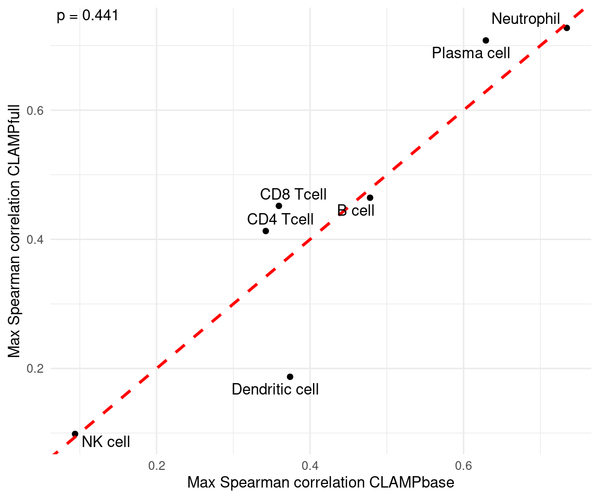
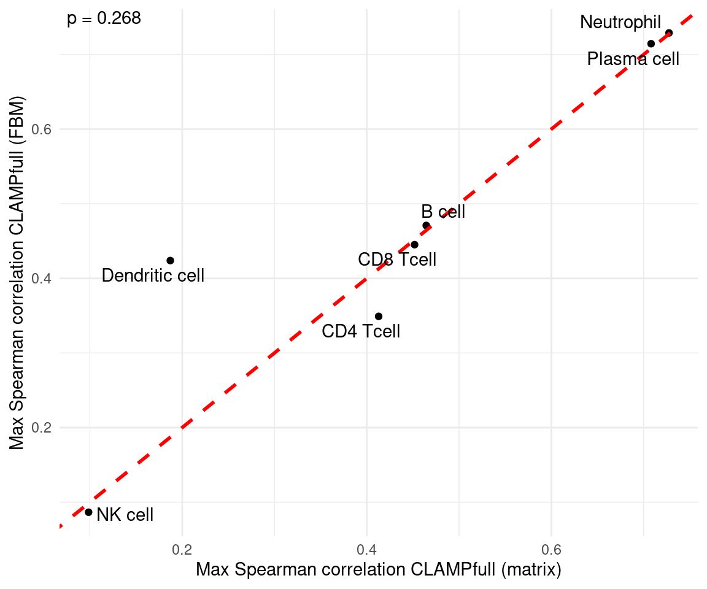

Comparing CLAMPbase and CLAMPfull
Maria Chikina
Source:vignettes/comparing_clampbase_clampfull.Rmd
comparing_clampbase_clampfull.RmdOverview
This vignette compares the two main models in the CLAMP package:
- CLAMPbase: Unsupervised matrix factorization for dimensionality reduction without prior knowledge.
- CLAMPfull: Pathway-guided refinement that integrates biological prior knowledge to improve interpretability.
Using a small human whole blood RNA-Seq dataset, we demonstrate that incorporating pathway priors in CLAMPfull improves the biological interpretability of latent variables compared to the baseline CLAMPbase model.
We illustrate how to:
- Fit both
CLAMPbaseandCLAMPfullmodels, - Compare their performance using cell type correlations, and
- Verify that the FBM (Filebacked Big Matrix) implementation produces identical results.
2. Load Prior Knowledge Matrices
# Download pathway and cell marker libraries from Enrichr
gmtList <- list(
CellMarkers = getGMT(
"https://maayanlab.cloud/Enrichr/geneSetLibrary?mode=text&libraryName=CellMarker_2024",
"CellMarker_2024"
),
KEGG = getGMT(
"https://maayanlab.cloud/Enrichr/geneSetLibrary?mode=text&libraryName=KEGG_2021_Human",
"KEGG_2021_Human"
)
)
# Combine into a single sparse matrix
pathMatCell <- gmtListToSparseMat(gmtList)
# Load additional xCell reference matrix
data("xCell")
# Match pathways to the gene space of whole blood
matchedPathsWB <- getMatchedPathwayMatList(
pathMatCell,
xCell,
new.genes = rownames(dataWholeBlood),
min.genes = 2
)3. Compute SVD and Infer k
set.seed(1)
wb_svd_k <- select_svd_k(dataWholeBlood)
wb_svd <- compute_svd(dataWholeBlood, k = wb_svd_k)
wb_clamp_k <- select_clamp_k(wb_svd, n_samples = ncol(dataWholeBlood), svd_k = wb_svd_k)
wb_clamp_k## [1] 84. Fit CLAMPbase and CLAMPfull
wb_clamp_base <- CLAMPbase(
dataWholeBlood,
svdres = wb_svd,
clamp_k = wb_clamp_k,
trace = FALSE,
adaptive.p = 0.05
)
wb_clamp_full <- CLAMPfull(
dataWholeBlood,
priorMat = matchedPathsWB,
svdres = wb_svd,
clamp.base.result = wb_clamp_base,
clamp_k = wb_clamp_k,
trace = TRUE,
use_cpp = TRUE
)5. Compare CLAMPbase vs CLAMPfull
This plot compares the maximum Spearman correlation for each major blood cell type between CLAMPbase and CLAMPfull.
Points above the red dashed line indicate improved correspondence when biological priors are included.
Most cell types show higher correlations under CLAMPfull, demonstrating that integrating pathway information helps capture more biologically meaningful latent variables.
output <- compareBs(
wb_clamp_base,
wb_clamp_full,
celltypeTargets,
method = "s",
xlab = "CLAMPbase",
ylab = "CLAMPfull"
)## [1] 8 36
## [1] 8 36
output$plot
6. Inspect Named Matrix Outputs
CLAMPbase and CLAMPfull now return B (gene loadings, LVs × genes) and Z (sample scores, LVs × samples) as proper named matrices.
# B: gene loadings (LVs × genes)
dim(wb_clamp_full$B)## [1] 8 36
wb_clamp_full$B[1:3, 1:4]## BD8001 BD8002 BD8003 BD8004
## LV1 1.5208805 1.019819 1.52010647 1.723528
## LV2 -0.3858266 1.290221 -2.01065989 -2.148343
## LV3 -0.7590255 -1.089290 -0.02649019 -3.321543
# Z: sample scores (LVs × samples)
dim(wb_clamp_full$Z)## [1] 11530 8
wb_clamp_full$Z[1:3, 1:4]## LV1 LV2 LV3 LV4
## GAS6 0 0.0000000 0 0
## MMP14 0 0.0000000 0 0
## MARCKSL1 0 0.3406663 0 07. Verify FBM Implementation
We verify that CLAMPfull produces identical results when using a file-backed matrix (FBM) input instead of an in-memory matrix. We reuse the same pre-computed SVD and clamp_k so that any differences are attributable solely to the matrix format, not the randomized SVD.
dataWholeBloodFBM <- bigstatsr::as_FBM(dataWholeBlood)
wb_clamp_full_fbm <- CLAMPfull(
dataWholeBloodFBM,
priorMat = matchedPathsWB,
svdres = wb_svd,
clamp.base.result = wb_clamp_base,
clamp_k = wb_clamp_k,
trace = TRUE,
use_cpp = TRUE
)The FBM implementation produces identical results:
output <- compareBs(
wb_clamp_full,
wb_clamp_full_fbm,
celltypeTargets,
method = "s",
xlab = "CLAMPfull (matrix)",
ylab = "CLAMPfull (FBM)"
)## [1] 8 36
## [1] 8 36
output$plot
Session Information
## R Under development (unstable) (2026-02-02 r89367)
## Platform: x86_64-pc-linux-gnu
## Running under: Pop!_OS 22.04 LTS
##
## Matrix products: default
## BLAS/LAPACK: /usr/lib/x86_64-linux-gnu/openblas-pthread/libopenblasp-r0.3.20.so; LAPACK version 3.10.0
##
## locale:
## [1] LC_CTYPE=en_US.UTF-8 LC_NUMERIC=C
## [3] LC_TIME=es_ES.UTF-8 LC_COLLATE=en_US.UTF-8
## [5] LC_MONETARY=es_ES.UTF-8 LC_MESSAGES=en_US.UTF-8
## [7] LC_PAPER=es_ES.UTF-8 LC_NAME=C
## [9] LC_ADDRESS=C LC_TELEPHONE=C
## [11] LC_MEASUREMENT=es_ES.UTF-8 LC_IDENTIFICATION=C
##
## time zone: America/Denver
## tzcode source: system (glibc)
##
## attached base packages:
## [1] stats graphics grDevices utils datasets methods base
##
## other attached packages:
## [1] bigstatsr_1.6.2 CLAMP_0.99.0 BiocStyle_2.39.0
##
## loaded via a namespace (and not attached):
## [1] gtable_0.3.6 circlize_0.4.17 shape_1.4.6.1
## [4] rjson_0.2.23 xfun_0.56 bslib_0.10.0
## [7] ggplot2_4.0.2 htmlwidgets_1.6.4 GlobalOptions_0.1.3
## [10] ggrepel_0.9.6 lattice_0.22-7 bigassertr_0.1.7
## [13] ps_1.9.1 vctrs_0.7.1 tools_4.6.0
## [16] generics_0.1.4 stats4_4.6.0 parallel_4.6.0
## [19] tibble_3.3.1 cluster_2.1.8.1 pkgconfig_2.0.3
## [22] Matrix_1.7-4 RColorBrewer_1.1-3 S7_0.2.1
## [25] desc_1.4.3 S4Vectors_0.49.0 lifecycle_1.0.5
## [28] compiler_4.6.0 farver_2.1.2 textshaping_1.0.4
## [31] bigparallelr_0.3.2 codetools_0.2-20 ComplexHeatmap_2.27.1
## [34] clue_0.3-66 htmltools_0.5.9 sass_0.4.10
## [37] yaml_2.3.12 glmnet_4.1-10 pkgdown_2.2.0
## [40] pillar_1.11.1 crayon_1.5.3 jquerylib_0.1.4
## [43] cachem_1.1.0 iterators_1.0.14 foreach_1.5.2
## [46] rsvd_1.0.5 tidyselect_1.2.1 digest_0.6.39
## [49] dplyr_1.2.0 bookdown_0.46 labeling_0.4.3
## [52] splines_4.6.0 cowplot_1.2.0 fastmap_1.2.0
## [55] grid_4.6.0 colorspace_2.1-2 cli_3.6.5
## [58] magrittr_2.0.4 survival_3.8-6 withr_3.0.2
## [61] scales_1.4.0 rmarkdown_2.30 matrixStats_1.5.0
## [64] rmio_0.4.0 bit_4.6.0 otel_0.2.0
## [67] ragg_1.5.0 png_0.1-8 GetoptLong_1.1.0
## [70] evaluate_1.0.5 ff_4.5.2 knitr_1.51
## [73] IRanges_2.45.0 doParallel_1.0.17 irlba_2.3.7
## [76] rlang_1.1.7 Rcpp_1.1.1 glue_1.8.0
## [79] BiocManager_1.30.27 BiocGenerics_0.57.0 jsonlite_2.0.0
## [82] R6_2.6.1 systemfonts_1.3.1 fs_1.6.6
## [85] flock_0.7